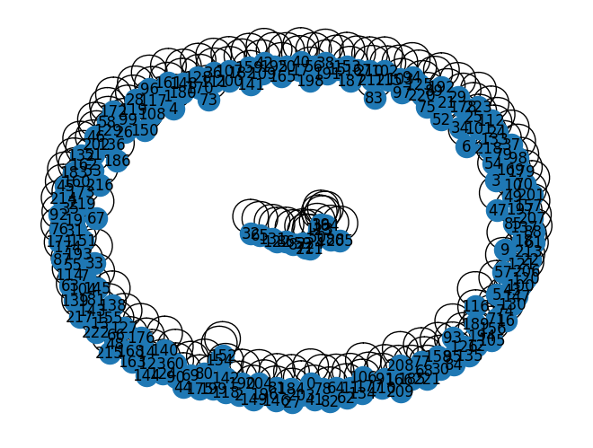

Closeness Centrality beritajatim#
Load Data#
import nltk
import pandas as pd
from sklearn.feature_extraction.text import TfidfVectorizer
from sklearn.metrics.pairwise import cosine_similarity
import numpy as np
import re
import networkx as nx
from nltk.tokenize import sent_tokenize
nltk.download('punkt')
[nltk_data] Downloading package punkt to /root/nltk_data...
[nltk_data] Unzipping tokenizers/punkt.zip.
True
from google.colab import drive
drive.mount('/content/drive')
---------------------------------------------------------------------------
KeyboardInterrupt Traceback (most recent call last)
<ipython-input-2-d5df0069828e> in <cell line: 2>()
1 from google.colab import drive
----> 2 drive.mount('/content/drive')
/usr/local/lib/python3.10/dist-packages/google/colab/drive.py in mount(mountpoint, force_remount, timeout_ms, readonly)
101 def mount(mountpoint, force_remount=False, timeout_ms=120000, readonly=False):
102 """Mount your Google Drive at the specified mountpoint path."""
--> 103 return _mount(
104 mountpoint,
105 force_remount=force_remount,
/usr/local/lib/python3.10/dist-packages/google/colab/drive.py in _mount(mountpoint, force_remount, timeout_ms, ephemeral, readonly)
130 )
131 if ephemeral:
--> 132 _message.blocking_request(
133 'request_auth', request={'authType': 'dfs_ephemeral'}, timeout_sec=None
134 )
/usr/local/lib/python3.10/dist-packages/google/colab/_message.py in blocking_request(request_type, request, timeout_sec, parent)
174 request_type, request, parent=parent, expect_reply=True
175 )
--> 176 return read_reply_from_input(request_id, timeout_sec)
/usr/local/lib/python3.10/dist-packages/google/colab/_message.py in read_reply_from_input(message_id, timeout_sec)
94 reply = _read_next_input_message()
95 if reply == _NOT_READY or not isinstance(reply, dict):
---> 96 time.sleep(0.025)
97 continue
98 if (
KeyboardInterrupt:
data = pd.read_csv("/content/drive/MyDrive/ppw/beritajatim.csv")
data
| Judul | Isi | Kategori | |
|---|---|---|---|
| 0 | Timnas Indonesia Bakal Turunkan Amar Rayhan La... | Surabaya (beritajatim.com) –Timnas Indonesia U... | Sport |
| 1 | Tim PKM UB Malang Kenalkan Metode Penanaman Ve... | Malang (beritajatim.com)– Tim Program Kreativi... | Pendidikan |
| 2 | Prabowo: Seribu Teman Terlalu Sedikit, Satu Mu... | Surabaya (beritajatim.com) –Calon Presiden Koa... | Politik |
| 3 | 96 Persen Warga Nganjuk Terlindungi Jaminan Ke... | Nganjuk (beritajatim.com) –Pemerintah Kabupate... | Pendidikan |
| 4 | Ratusan Guru Ngaji di Ring Satu Petrokimia Gre... | Gresik (beritajatim.com) –Ratusan guru mengaji... | Pendidikan |
| 5 | PT SBI Tuban Beri Sosialisasi Bahaya Area Tamb... | Bagikan ini | Pendidikan |
| 6 | Fakhri Husaini Imbau Tak Kritik Berlebihan Tim... | Surabaya (beritajatim.com)– Performa Timnas In... | Sport |
| 7 | Tim Spektronics ITS Surabaya Juara Dua Chem E-... | Surabaya (beritajatim.com) –Tim Spektronics IT... | Pendidikan |
| 8 | Peserta SKD CASN Kota Malang Gagal Login, Ini ... | Malang (beritajatim.com)– Ujian Seleksi Kompet... | Politik |
| 9 | Indonesia Ingin Cetak Sejarah Lewat Piala Duni... | Surabaya (beritajatim.com)– Indonesia ingin ca... | Sport |
| 10 | Ganjar: Demokrasi Kita Sedang Tidak Baik-Baik ... | Jakarta (beritajatim.com)– Ganjar Pranowo, sal... | Politik |
| 11 | ICCWA Gelar Golden Group Indonesian Entreprene... | Surabaya (beritajatim.com)– Kamar Dagang Indon... | Pendidikan |
| 12 | Guru Besar ITS Gagas Olah Bijih Nikel Ramah Li... | Surabaya (beritajatim.com)– Guru Besar ITS Sur... | Pendidikan |
| 13 | Raih Pendanaan Matching Fund, Unisma Produksi ... | Malang (beritajatim.com)– Tim dari Universitas... | Pendidikan |
| 14 | PSMP Mojokerto Jadi Tuan Rumah Grup E Liga 3 R... | Mojokerto (beritajatim.com)– PS Mojokerto Putr... | Sport |
| 15 | PENS Temukan Startup Binaan dengan Investor di... | Surabaya (beritajatim.com)– Politeknik Elektro... | Pendidikan |
| 16 | Yusron: Paham Literasi Politik, Tapi Tuna Politik | Surabaya (beritajatim.com) –Yusron Aminulloh, ... | Pendidikan |
| 17 | Komisi A Pertanyakan Netralitas Pemkot Surabay... | Surabaya (beritajatim.com) –Komisi A DPRD Sura... | Politik |
| 18 | Dinasti Nusantara: Ganjar Perhatian pada Budaya | Kediri (beritajatim.com)– Koordinator Wilayah ... | Politik |
| 19 | Ketua DPD RI Ingatkan Risiko Paylater ke Keseh... | Jakarta (beritajatim.com)– Dalam era digital i... | Politik |
pd.crosstab(index=data['Kategori'], columns='count')
| col_0 | count |
|---|---|
| Kategori | |
| Pendidikan | 10 |
| Politik | 6 |
| Sport | 4 |
Tokenisasi per Kalimat#
hasil_kalimat=[]
for i in range(len(data)):
token = sent_tokenize(data['Isi'][i])
hasil_kalimat.append(token)
kalimat = []
for i in range(len(hasil_kalimat)):
for x in range (len(hasil_kalimat[i])):
datacek = []
datacek.append(i)
datacek.append(hasil_kalimat[i][x])
kalimat.append(datacek)
databaru = pd.DataFrame(kalimat, columns=["Dokumen ke", "Kalimat"])
databaru
| Dokumen ke | Kalimat | |
|---|---|---|
| 0 | 0 | Surabaya (beritajatim.com) –Timnas Indonesia U... |
| 1 | 0 | Bima Sakti mengatakan bahwa kondisi Amar saat ... |
| 2 | 0 | Kondisinya jauh lebih baik dari sebelumnya.“Am... |
| 3 | 0 | Bahkan jajaran pelatih juga telah menginfokan ... |
| 4 | 0 | Sudah kita infokan pemain dan kita tanya ke pe... |
| ... | ... | ... |
| 220 | 19 | Di satu sisi, mereka sudah terjerat utang, dan... |
| 221 | 19 | Oleh karena itu, dia berharap agar pemerintah ... |
| 222 | 19 | Oleh karena itu, diperlukan regulasi yang tepa... |
| 223 | 19 | Selain itu, perlu pengawasan yang ketat untuk ... |
| 224 | 19 | [beq]Bagikan ini |
225 rows × 2 columns
Cleansing#
#Remove Puncutuation
clean_symbol = re.compile('[^\w\s.?!,/]')
def clean_punct(text):
text = clean_symbol.sub(' ', text)
return text
# Buat kolom tambahan untuk data description yang telah diremovepunctuation
preprocessing = databaru['Kalimat'].apply(clean_punct)
clean=pd.DataFrame(preprocessing)
clean['Dokumen ke']=databaru['Dokumen ke'].values
clean
| Kalimat | Dokumen ke | |
|---|---|---|
| 0 | Surabaya beritajatim.com Timnas Indonesia U... | 0 |
| 1 | Bima Sakti mengatakan bahwa kondisi Amar saat ... | 0 |
| 2 | Kondisinya jauh lebih baik dari sebelumnya. Am... | 0 |
| 3 | Bahkan jajaran pelatih juga telah menginfokan ... | 0 |
| 4 | Sudah kita infokan pemain dan kita tanya ke pe... | 0 |
| ... | ... | ... |
| 220 | Di satu sisi, mereka sudah terjerat utang, dan... | 19 |
| 221 | Oleh karena itu, dia berharap agar pemerintah ... | 19 |
| 222 | Oleh karena itu, diperlukan regulasi yang tepa... | 19 |
| 223 | Selain itu, perlu pengawasan yang ketat untuk ... | 19 |
| 224 | beq Bagikan ini | 19 |
225 rows × 2 columns
TF-TDF#
# Menghitung TF-IDF
vectorizer = TfidfVectorizer()
tfidf_matrix = vectorizer.fit_transform(clean['Kalimat'])
Cosine Similarity#
# Menghitung cosine similarity
cosine_similarities = cosine_similarity(tfidf_matrix, tfidf_matrix)
len(cosine_similarities)
225
threshold=0.5
G = nx.Graph()
for i in range(len(cosine_similarities)):
for j in range( len(cosine_similarities)):
sim = cosine_similarities[i][j]
if sim > threshold:
G.add_edge(i, j, weight=sim)
print(i,',',j,'=',sim)
0 , 0 = 1.0000000000000002
1 , 1 = 1.0000000000000004
2 , 2 = 1.0
3 , 3 = 1.0000000000000002
4 , 4 = 1.0000000000000004
5 , 5 = 1.0
6 , 6 = 1.0000000000000002
7 , 7 = 1.0
8 , 8 = 1.0000000000000002
8 , 59 = 0.5830079089305031
8 , 86 = 0.5729476813842828
9 , 9 = 1.0000000000000002
10 , 10 = 1.0
11 , 11 = 1.0000000000000002
12 , 12 = 1.0000000000000002
13 , 13 = 1.0000000000000002
14 , 14 = 1.0000000000000002
15 , 15 = 1.0000000000000002
16 , 16 = 1.0000000000000002
17 , 17 = 1.0
18 , 18 = 1.0000000000000002
19 , 19 = 1.0
20 , 20 = 1.0
21 , 21 = 1.0000000000000002
22 , 22 = 1.0
23 , 23 = 1.0
23 , 39 = 0.7082381512061704
23 , 50 = 0.6116527235003546
23 , 113 = 0.9617324710957255
23 , 164 = 0.7082381512061704
24 , 24 = 1.0
25 , 25 = 0.9999999999999999
26 , 26 = 1.0000000000000002
27 , 27 = 1.0000000000000004
28 , 28 = 1.0
29 , 29 = 1.0
30 , 30 = 1.0000000000000002
31 , 31 = 1.0
32 , 32 = 1.0000000000000002
32 , 65 = 0.6031623290060101
33 , 33 = 0.9999999999999999
34 , 34 = 1.0000000000000002
35 , 35 = 0.9999999999999997
36 , 36 = 1.0000000000000002
37 , 37 = 0.9999999999999999
38 , 38 = 1.0000000000000002
39 , 23 = 0.7082381512061704
39 , 39 = 1.0000000000000002
39 , 113 = 0.7364190900191375
39 , 164 = 0.5423130761446144
40 , 40 = 1.0
41 , 41 = 1.0000000000000002
42 , 42 = 1.0000000000000002
43 , 43 = 1.0000000000000002
44 , 44 = 1.0000000000000002
45 , 45 = 0.9999999999999999
46 , 46 = 1.0000000000000002
47 , 47 = 1.0
48 , 48 = 1.0
49 , 49 = 1.0
50 , 23 = 0.6116527235003546
50 , 50 = 1.0
50 , 59 = 0.5035006582352015
50 , 113 = 0.6359905086738765
50 , 188 = 0.5974512698111787
50 , 224 = 0.6359905086738765
51 , 51 = 1.0
52 , 52 = 1.0
53 , 53 = 1.0
54 , 54 = 1.0
55 , 55 = 1.0
56 , 56 = 0.9999999999999999
57 , 57 = 1.0000000000000002
58 , 58 = 1.0000000000000002
59 , 8 = 0.5830079089305031
59 , 50 = 0.5035006582352015
59 , 59 = 1.0
59 , 72 = 0.5830079089305031
59 , 86 = 0.6159413157158631
59 , 211 = 0.5830079089305031
59 , 224 = 0.7916795162321939
60 , 60 = 1.0000000000000002
61 , 61 = 1.0
62 , 62 = 0.9999999999999998
63 , 63 = 1.0000000000000004
64 , 64 = 1.0
65 , 32 = 0.6031623290060101
65 , 65 = 1.0000000000000002
65 , 131 = 0.6049488022178434
66 , 66 = 1.0000000000000002
67 , 67 = 1.0
68 , 68 = 1.0
69 , 69 = 1.0
70 , 70 = 1.0
71 , 71 = 1.0
72 , 59 = 0.5830079089305031
72 , 72 = 1.0000000000000002
72 , 211 = 0.5423130761446144
72 , 224 = 0.7364190900191375
73 , 73 = 1.0
74 , 74 = 1.0000000000000004
75 , 75 = 1.0000000000000007
76 , 76 = 1.0
77 , 77 = 0.9999999999999994
78 , 78 = 1.0
79 , 79 = 1.0000000000000002
80 , 80 = 1.0000000000000002
81 , 81 = 1.0000000000000002
82 , 82 = 0.9999999999999998
83 , 83 = 1.0
84 , 84 = 1.0000000000000004
85 , 85 = 1.0000000000000002
86 , 8 = 0.5729476813842828
86 , 59 = 0.6159413157158631
86 , 86 = 1.0
86 , 122 = 0.5962624482944012
86 , 131 = 0.6288591743728272
87 , 87 = 1.0
88 , 88 = 1.0
89 , 89 = 1.0000000000000002
90 , 90 = 1.0
91 , 91 = 1.0
92 , 92 = 1.0
93 , 93 = 1.0
94 , 94 = 1.0
95 , 95 = 1.0000000000000002
96 , 96 = 1.0
97 , 97 = 1.0000000000000002
98 , 98 = 1.0000000000000004
99 , 99 = 1.0000000000000002
100 , 100 = 1.0
101 , 101 = 1.0
102 , 102 = 1.0
103 , 103 = 1.0
104 , 104 = 1.0
105 , 105 = 1.0000000000000002
106 , 106 = 1.0000000000000002
107 , 107 = 1.0
108 , 108 = 1.0
109 , 109 = 0.9999999999999998
110 , 110 = 1.0
111 , 111 = 1.0000000000000002
112 , 112 = 1.0000000000000002
113 , 23 = 0.9617324710957255
113 , 39 = 0.7364190900191375
113 , 50 = 0.6359905086738765
113 , 113 = 1.0000000000000002
113 , 164 = 0.7364190900191375
114 , 114 = 1.0000000000000002
115 , 115 = 1.0000000000000002
116 , 116 = 1.0000000000000002
117 , 117 = 1.0000000000000004
118 , 118 = 1.0
119 , 119 = 1.0
120 , 120 = 1.0000000000000002
121 , 121 = 1.0
122 , 86 = 0.5962624482944012
122 , 122 = 1.0
122 , 131 = 0.5863167690376455
123 , 123 = 1.0
124 , 124 = 1.0000000000000002
125 , 125 = 1.0000000000000004
126 , 126 = 1.0000000000000002
127 , 127 = 1.0000000000000004
128 , 128 = 1.0000000000000002
129 , 129 = 1.0
130 , 130 = 1.0
131 , 65 = 0.6049488022178434
131 , 86 = 0.6288591743728272
131 , 122 = 0.5863167690376455
131 , 131 = 1.0
132 , 132 = 0.9999999999999999
133 , 133 = 1.0000000000000002
134 , 134 = 1.0
135 , 135 = 1.0
136 , 136 = 1.0000000000000002
137 , 137 = 1.0
138 , 138 = 1.0000000000000002
139 , 139 = 1.0
140 , 140 = 1.0000000000000002
141 , 141 = 1.0
142 , 142 = 1.0
143 , 143 = 1.0000000000000002
144 , 144 = 1.0
145 , 145 = 1.0
146 , 146 = 1.0
147 , 147 = 1.0000000000000002
148 , 148 = 1.0000000000000002
149 , 149 = 1.0
150 , 150 = 1.0
151 , 151 = 1.0
152 , 152 = 0.9999999999999999
152 , 154 = 0.5015713303984628
153 , 153 = 0.9999999999999999
154 , 152 = 0.5015713303984628
154 , 154 = 1.0
155 , 155 = 1.0000000000000002
156 , 156 = 1.0
157 , 157 = 1.0
158 , 158 = 1.0000000000000004
159 , 159 = 1.0000000000000002
160 , 160 = 1.0000000000000002
161 , 161 = 1.0
162 , 162 = 1.0000000000000002
163 , 163 = 1.0
164 , 23 = 0.7082381512061704
164 , 39 = 0.5423130761446144
164 , 113 = 0.7364190900191375
164 , 164 = 1.0000000000000002
165 , 165 = 1.0
166 , 166 = 1.0
167 , 167 = 0.9999999999999998
168 , 168 = 1.0000000000000002
169 , 169 = 1.0000000000000002
170 , 170 = 1.0000000000000002
171 , 171 = 1.0
172 , 172 = 1.0
173 , 173 = 1.0000000000000002
174 , 174 = 1.0
175 , 175 = 1.0
176 , 176 = 1.0000000000000002
177 , 177 = 1.0000000000000002
178 , 178 = 1.0
179 , 179 = 1.0000000000000002
180 , 180 = 1.0000000000000002
181 , 181 = 1.0000000000000002
182 , 182 = 1.0
183 , 183 = 1.0
184 , 184 = 1.0
185 , 185 = 1.0000000000000002
186 , 186 = 0.9999999999999999
187 , 187 = 1.0000000000000002
188 , 50 = 0.5974512698111787
188 , 188 = 1.0000000000000002
188 , 205 = 0.7570610720815624
189 , 189 = 1.0
190 , 190 = 1.0000000000000004
191 , 191 = 1.0
192 , 192 = 1.0000000000000002
193 , 193 = 1.0000000000000002
194 , 194 = 1.0
195 , 195 = 1.0000000000000002
196 , 196 = 1.0
197 , 197 = 1.0
198 , 198 = 1.0
199 , 199 = 1.0
200 , 200 = 1.0
201 , 201 = 1.0000000000000002
202 , 202 = 1.0000000000000002
203 , 203 = 1.0
204 , 204 = 1.0000000000000002
205 , 188 = 0.7570610720815624
205 , 205 = 1.0000000000000002
206 , 206 = 1.0
207 , 207 = 1.0000000000000002
208 , 208 = 1.0000000000000004
209 , 209 = 1.0000000000000002
210 , 210 = 1.0000000000000004
211 , 59 = 0.5830079089305031
211 , 72 = 0.5423130761446144
211 , 211 = 1.0000000000000002
211 , 224 = 0.7364190900191375
212 , 212 = 1.0000000000000002
213 , 213 = 1.0
214 , 214 = 1.0000000000000002
215 , 215 = 1.0
216 , 216 = 1.0
217 , 217 = 1.0000000000000002
218 , 218 = 1.0000000000000002
219 , 219 = 1.0
220 , 220 = 1.0000000000000002
221 , 221 = 1.0
222 , 222 = 1.0
223 , 223 = 1.0
224 , 50 = 0.6359905086738765
224 , 59 = 0.7916795162321939
224 , 72 = 0.7364190900191375
224 , 211 = 0.7364190900191375
224 , 224 = 1.0000000000000002
Closeness Centrality#
# # Membuat graf untuk closeness centrality
# G = nx.from_numpy_array(cosine_similarities)
# Menghitung closeness centrality
closeness_centrality = nx.closeness_centrality(G)
# Menambahkan closeness centrality ke dalam dataframe kalimat
clean['Closeness Centrality'] = [closeness_centrality[i] for i in range(len(databaru))]
# Menampilkan dataframe kalimat
clean
| Kalimat | Dokumen ke | Closeness Centrality | |
|---|---|---|---|
| 0 | Surabaya beritajatim.com Timnas Indonesia U... | 0 | 0.000000 |
| 1 | Bima Sakti mengatakan bahwa kondisi Amar saat ... | 0 | 0.000000 |
| 2 | Kondisinya jauh lebih baik dari sebelumnya. Am... | 0 | 0.000000 |
| 3 | Bahkan jajaran pelatih juga telah menginfokan ... | 0 | 0.000000 |
| 4 | Sudah kita infokan pemain dan kita tanya ke pe... | 0 | 0.000000 |
| ... | ... | ... | ... |
| 220 | Di satu sisi, mereka sudah terjerat utang, dan... | 19 | 0.000000 |
| 221 | Oleh karena itu, dia berharap agar pemerintah ... | 19 | 0.000000 |
| 222 | Oleh karena itu, diperlukan regulasi yang tepa... | 19 | 0.000000 |
| 223 | Selain itu, perlu pengawasan yang ketat untuk ... | 19 | 0.000000 |
| 224 | beq Bagikan ini | 19 | 0.030075 |
225 rows × 3 columns
# databaru.to_csv('/content/drive/MyDrive/ppw/tugas/tugas_ppw/closeness_centrality_threshould.csv', index=False)
# pos = nx.spring_layout(G)
nx.draw(G, with_labels=True)

Hasil Ringkasan#
# Mengelompokkan DataFrame berdasarkan 'Dokumen ke' dan mengurutkan nilai Closeness Centrality
sorted_df = clean.sort_values(by=['Dokumen ke', 'Closeness Centrality'], ascending=[True, False]).reset_index()
# Menampilkan DataFrame yang telah diurutkan
sorted_df
| index | Kalimat | Dokumen ke | Closeness Centrality | |
|---|---|---|---|---|
| 0 | 8 | way/but Bagikan ini | 0 | 0.027211 |
| 1 | 0 | Surabaya beritajatim.com Timnas Indonesia U... | 0 | 0.000000 |
| 2 | 1 | Bima Sakti mengatakan bahwa kondisi Amar saat ... | 0 | 0.000000 |
| 3 | 2 | Kondisinya jauh lebih baik dari sebelumnya. Am... | 0 | 0.000000 |
| 4 | 3 | Bahkan jajaran pelatih juga telah menginfokan ... | 0 | 0.000000 |
| ... | ... | ... | ... | ... |
| 220 | 219 | Ini harus diakui oleh masyarakat, jelasnya.BA... | 19 | 0.000000 |
| 221 | 220 | Di satu sisi, mereka sudah terjerat utang, dan... | 19 | 0.000000 |
| 222 | 221 | Oleh karena itu, dia berharap agar pemerintah ... | 19 | 0.000000 |
| 223 | 222 | Oleh karena itu, diperlukan regulasi yang tepa... | 19 | 0.000000 |
| 224 | 223 | Selain itu, perlu pengawasan yang ketat untuk ... | 19 | 0.000000 |
225 rows × 4 columns
# Mengambil 4 kalimat dengan nilai closeness centrality tertinggi untuk setiap 'Dokumen ke'
top_4_sentences = sorted_df.groupby('Dokumen ke').head(4)
top_4_sentences
| index | Kalimat | Dokumen ke | Closeness Centrality | |
|---|---|---|---|---|
| 0 | 8 | way/but Bagikan ini | 0 | 0.027211 |
| 1 | 0 | Surabaya beritajatim.com Timnas Indonesia U... | 0 | 0.000000 |
| 2 | 1 | Bima Sakti mengatakan bahwa kondisi Amar saat ... | 0 | 0.000000 |
| 3 | 2 | Kondisinya jauh lebih baik dari sebelumnya. Am... | 0 | 0.000000 |
| 9 | 23 | dan/ted Bagikan ini | 1 | 0.025974 |
| ... | ... | ... | ... | ... |
| 209 | 208 | Sehingga sejalan dengan keinginan pihaknya aga... | 18 | 0.000000 |
| 212 | 224 | beq Bagikan ini | 19 | 0.030075 |
| 213 | 212 | Jakarta beritajatim.com Dalam era digital i... | 19 | 0.000000 |
| 214 | 213 | Fitur paylater menawarkan opsi Buy Now Pay La... | 19 | 0.000000 |
| 215 | 214 | LaNyalla mengatakan bahwa paylater sebenarnya ... | 19 | 0.000000 |
77 rows × 4 columns
# Menggabungkan teks 'Kalimat' berdasarkan 'Dokumen ke' yang sama
result = top_4_sentences.groupby('Dokumen ke')['Kalimat'].apply(' '.join).reset_index()
# Menampilkan hasil penggabungan
result
| Dokumen ke | Kalimat | |
|---|---|---|
| 0 | 0 | way/but Bagikan ini Surabaya beritajatim.com... |
| 1 | 1 | dan/ted Bagikan ini Malang beritajatim.com ... |
| 2 | 2 | tok/ian Bagikan ini Surabaya beritajatim.com... |
| 3 | 3 | nm/ted Bagikan ini Nganjuk beritajatim.com ... |
| 4 | 4 | Gresik beritajatim.com Ratusan guru mengaji... |
| 5 | 5 | Bagikan ini |
| 6 | 6 | way/beq Bagikan ini Surabaya beritajatim.com... |
| 7 | 7 | ipl/ian Bagikan ini Surabaya beritajatim.com... |
| 8 | 8 | luc/beq Bagikan ini Malang beritajatim.com ... |
| 9 | 9 | Way/Aje Bagikan ini Surabaya beritajatim.com... |
| 10 | 10 | ted Bagikan ini Jakarta beritajatim.com Ga... |
| 11 | 11 | Mnd/Aje Bagikan ini Surabaya beritajatim.com... |
| 12 | 12 | Ipl/Aje Bagikan ini Surabaya beritajatim.com... |
| 13 | 13 | Malang beritajatim.com Tim dari Universitas... |
| 14 | 14 | tin/ted Bagikan ini Stadion Gajah Mada di Kec... |
| 15 | 15 | Surabaya beritajatim.com Politeknik Elektro... |
| 16 | 16 | suf Bagikan ini Surabaya beritajatim.com Y... |
| 17 | 17 | asg/suf Bagikan ini Surabaya beritajatim.com... |
| 18 | 18 | isa/beq Bagikan ini Kediri beritajatim.com ... |
| 19 | 19 | beq Bagikan ini Jakarta beritajatim.com Da... |
Modelling#
from sklearn.model_selection import train_test_split
from sklearn.naive_bayes import GaussianNB
from sklearn.metrics import accuracy_score
# Menghitung TF-IDF
vec = TfidfVectorizer()
tfidf_result = vec.fit_transform(result['Kalimat']).toarray()
y=data['Kategori']
X_train,X_test,y_train,y_test = train_test_split(tfidf_result,y,test_size=0.2,random_state=42)
NB = GaussianNB()
gaus=NB.fit(X_train, y_train)
y_pred = gaus.predict(X_test)
accuracy = accuracy_score(y_test, y_pred)
print(f'Akurasi: {accuracy}')
Akurasi: 0.5